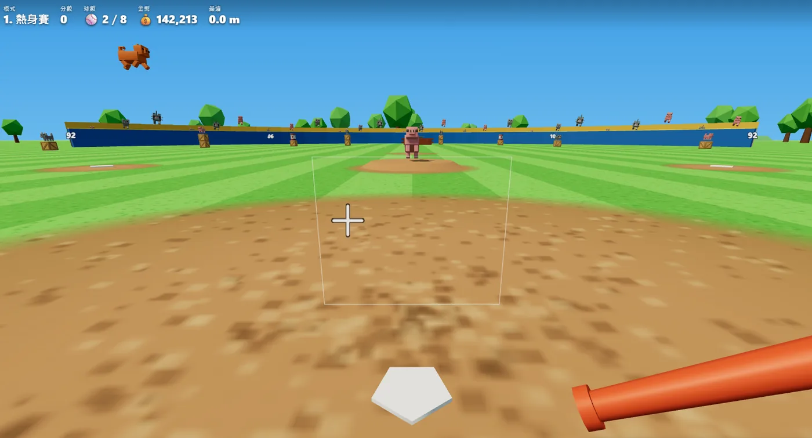
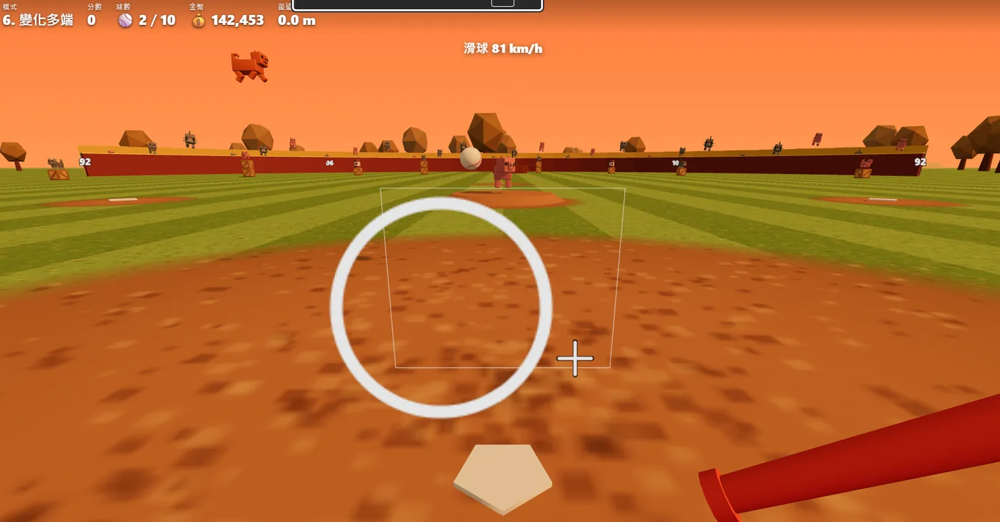
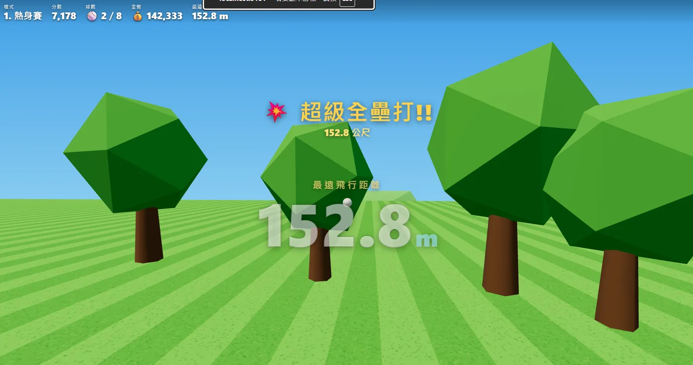
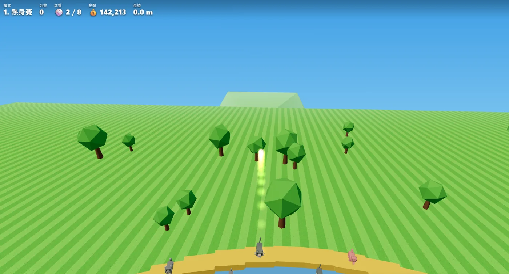
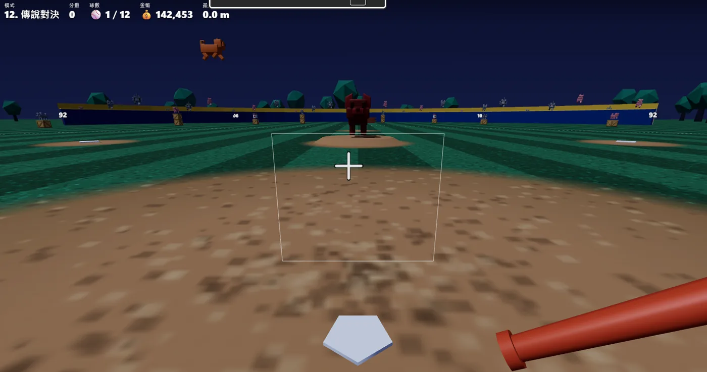
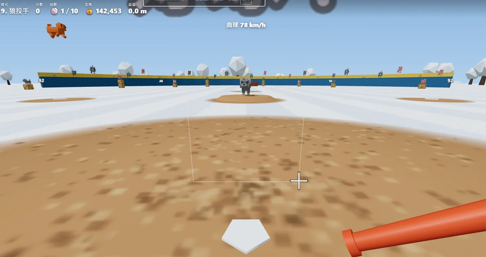

30 秒看懂怎麼玩
滑鼠移準星、抓時機點一下，就這麼簡單



90 秒一局的爽快節奏，到永無止境的生存挑戰
每一球都有回饋，偶爾的大獎時刻讓你一直「再來一球」
竹棒超大甜蜜點、大鎚打中必轟天、火焰棒無空氣阻力、磁力棒顯示進壘預測點、雷神棒 PERFECT 落雷……還有搞笑的鹹魚。
黃金球 ×2、炸彈球（忍住不揮 +100）、投手丟雞！打中外野觀眾動物 +800、爆桶連環爆、JACKPOT 飛天金豬 +5000。
Cloudflare D1 即時排行榜（防灌分）、留言板、線上人數統計——和全世界的打者比距離。
桌機滑鼠精準瞄準，手機虛擬搖桿 + 揮棒鈕。網頁即開即玩，成績與金幣存在你的裝置。
白天、黃昏、雪地、夜間——挑戰關卡越深，球場越美


